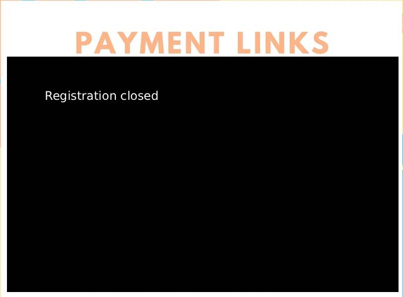

Take your data analysis skills to the next level with our comprehensive R programming course designed for beginners.
What You'll Learn
- Foundations of R programming and RStudio environment
- Data manipulation with dplyr and tidyr
- Data visualization with ggplot2
- Statistical analysis and modeling
- Creating interactive applications with Shiny
- R Markdown and Quarto for reproducible research
- Web scraping
- Capstone project
📅 Class Schedule
Course starts: 4th July 2026
Choose one of the following batch timings:
- Batch 1: Saturday 11:30 AM – 1:00 PM
- Batch 2: Saturday 6:00 PM – 7:30 PM
- Batch 3: Sunday 8:00 AM – 9:30 AM
- Batch 4 (potential): Timing to be decided by consensus among participants
Duration: Approximately 3 months for completing Basics
Format: Classes once a week on weekends, held over Google Meet
Basic Curriculum
Basic 1: R Fundamentals
Introduction to R, RStudio interface, basic data types, vectors, matrices, data frames, and basic operations.
Basic 2: Data Manipulation
Working with the tidyverse, dplyr for data transformation, filtering, selecting, and summarizing data.
Basic 3: Data Visualization
Creating compelling visualizations with ggplot2, customizing plots, and creating publication-ready graphics.
Basic 4: Statistical Analysis
Descriptive statistics, hypothesis testing, and regression analysis in R. Implementing common statistical tests.
Basic 5: Finishing Round
Creating interactive dashboards with Shiny, functional programming, loops, conditionals, writing articles, creating academic tables, and web scraping.
Basic 6: Capstone Project
Consolidate your knowledge with a comprehensive project that demonstrates your R programming skills.
Advanced Course Curriculum
💡 Additional Fee Required
Advanced topics will require an additional fee of INR 900 which can be paid after you have finished Basics successfully.
Advanced 1: Infectious Disease Modelling
Learn to build and analyze epidemiological models using R for disease spread simulation and prediction.
Advanced 2: GIS Mapping
Geographic Information Systems in R - spatial data analysis, mapping, and geospatial visualization techniques.
Advanced 3: Health Economics and Outcomes Research
Economic evaluation methods, cost-effectiveness analysis, and health technology assessment using R.
Advanced 4: Simulation of Systems
Arrival and service time modelling, Hospital/clinic patient flow simulation
Advanced 5: Logistic Regression
Binary and multinomial logistic regression, model diagnostics, and interpretation of results.
Advanced 6: Introduction to Repeated Measurements
Longitudinal data analysis, mixed-effects models, and handling correlated observations.
Advanced 7: Survival Analysis
Time-to-event analysis, Kaplan-Meier curves, Cox proportional hazards models, and survival prediction.
Advanced 8: Time Series
Time series analysis, forecasting methods, ARIMA models, and seasonal decomposition.
Key Features & FAQ
🎓 Continuous Learning
Classes are spread over several months instead of intensive workshops, perfectly suited to R's longer learning curve.
🤝 Ongoing Support
Continued support even after classes end, ensuring you don't lose momentum in your R journey.
🏆 Coding Challenges
Periodic coding challenges to sustain and improve your R usage skills even after the course.
📹 Video Recordings
All classes are recorded and provided to participants for review and future reference.
📚 Resource Materials
Comprehensive learning materials, code examples, and additional resources provided.
🏅 Certification
Certificates issued to participants who complete the course and capstone project successfully.
Frequently Asked Questions
Why choose continuous classes over workshops?
R has a steeper learning curve compared to other programming languages. Our continuous class format allows for better retention, practice between sessions, and gradual skill building. This approach is much more effective than intensive workshops for mastering R programming.
What if I miss a class?
All classes are recorded and made available to participants for review and future reference. If you miss a session, you can catch up on the content at your own pace through these recordings. Additionally, I offer compensation classes for those who need extra support or have scheduling conflicts. I am fully committed to ensuring that every participant has the opportunity to successfully complete the course. However, I do not recommend relying on session recordings as the sole source of learning, if that is your intention. Recordings inevitably miss several important nuances, such as real-time clarifications, troubleshooting, spontaneous questions from participants, contextual emphasis, and the iterative way concepts are refined during live interaction. In the absence of these elements, a well-structured and deliberately produced instructional video/content on platforms such as YouTube, w3schools, LinkedIn Learning, any MOOCS would often serve the purpose more effectively than a passive viewing of session recordings.
Do I need prior programming experience?
No prior programming experience is required for the basic curriculum. We start from the fundamentals and gradually build up your skills.
What software do I need?
You'll need R and RStudio installed on your computer. Both are free software. We'll guide you through the installation process in the first class. An additional prerequisite is a good internet connection and a computer/laptop in good working condition.
How does the capstone project work?
The capstone project is a practical application where you'll use all the skills learned throughout the course to complete a real-world data analysis project. This project is required for certification.
Will data analysis using AI tools alongside R be taught?
Yes, absolutely — and this is one of the most important skills you can build right now.
AI tools like ChatGPT, GitHub Copilot, and Claude have transformed how we write and debug code. Used well, they dramatically accelerate your workflow. This course will teach you how to leverage these tools effectively within R — from generating boilerplate code and troubleshooting errors to interpreting output and exploring unfamiliar packages.
That said, AI alone is nowhere near sufficient for serious data analysis, and here is why that matters: AI tools do not understand your data. They cannot tell you whether your study design is valid, whether your variables are correctly operationalised, or whether a statistical test is appropriate for your research question. They hallucinate package functions, produce plausible-looking but wrong code, and have no awareness of your specific dataset's quirks, missing values, or distributional assumptions. If you cannot read and critically evaluate the code they generate, you will not know when they are wrong — and they are wrong often enough to matter in research and clinical contexts.
The professionals who will thrive are those who deeply understand R and statistical reasoning, and use AI as a powerful assistant rather than a replacement for thinking. This course equips you with exactly that foundation: the ability to use AI tools intelligently, catch their mistakes, and produce analysis you can stand behind.
Ready to Master R Programming?
Join our comprehensive R programming course and transform your data analysis capabilities.
🚀 Start Your Journey
Course starts: 4th July 2026
Limited seats available
An inexpensive INR 900 for the basics course. Register for advanced after you finish Basics
Accepted Payment Methods

What Happens After Registration?
- You'll receive a confirmation WhatsApp message with payment confirmation
- Access to our course preparation materials
- Installation guide for R and RStudio
- Welcome starter pack with course materials
- Invitation to our course community WhatsApp group. Meeting links are shared here.
Have questions? Feel free to reach out to me (aswathkarunakaran@gmail.com, Ph no- +91-9895973729/WhatsApp same number) before registering. We're here to help you succeed!
Before You Register — Make a Plan
Research shows that people who write down when and how they'll handle the hard weeks are far more likely to finish. Takes 10 minutes.
📋 Open the Commitment Planner